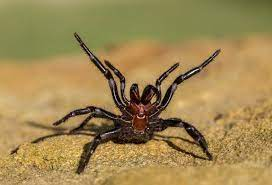

Specifically speaking of the Sydney Funnel-Web Spider, although they can all get fucked, it is the 2nd most venemous spider in the world. They love water, so if you have a pool or even just a puddle on your property these guys might creep up. It can take minutes to days for them to kill you, but luckily there is antivenom and their have been no reported deaths caused by a one since.
| Attacks | Deaths |
| 30-40 | 0 |
Data Collected in Austrailia through 2021